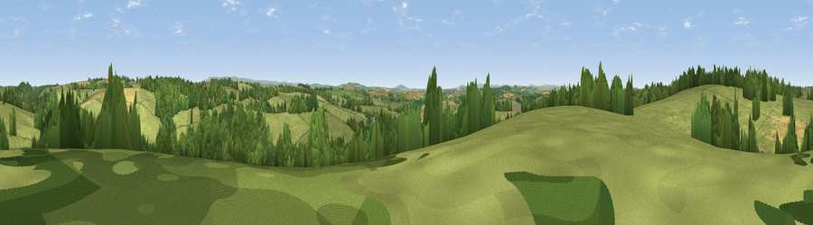

Viewpoint near St Giles on the Heath
#29838 in England · top 59% of its area beats it · near St Giles on the HeathThe view, rendered

A 360° render of this exact spot computed from the terrain model, tree cover and land cover — summer colours, afternoon light, calibrated against photographs of famous viewpoints. Real trees, hedges and buildings will differ in detail.
The panorama
Grey silhouette: terrain skyline in each direction (720 bearings, Earth curvature and refraction included). Dashed green: skyline with trees (+15 m) and buildings (+8 m) as obstacles. Blue strip: how far the ground is visible on each bearing.
Where the view opens
Wedge length = distance to the farthest visible ground on that bearing (vegetation-aware). Rings at 10, 25 and 50 km.
What fills the view
70% grassland · 22% woodland · 7% cropland ·
Angular shares of the visible panorama (visual magnitude), not map area. Landscape diversity 0.35 (0–1 Shannon).
Key numbers
More beautiful places nearby
The staircase of upgrades: each row has a higher view potential than everything closer. Driving times are estimates from straight-line distance, calibrated against real road routing — check an actual route before setting out.
| Place | Direction | Drive | Score |
|---|---|---|---|
| Viewpoint near Chapmans Well | NW · 2 km | ~5 min | 57.4 |
| Viewpoint near Tinhay | SSE · 8 km | ~16 min | 61.3 |
| Viewpoint near Chillaton | SSE · 10 km | ~20 min | 63.4 |
| Viewpoint near Bradstone | SSE · 11 km | ~21 min | 64.1 |
| Viewpoint near Chillaton | SSE · 12 km | ~22 min | 65.2 |
| Viewpoint near Whitstone | WNW · 13 km | ~24 min | 69.4 |
| Brent Tor | SE · 15 km | ~27 min | 73.4 |
| Sourton Tors | E · 18 km | ~31 min | 74.8 |
50.69724, -4.31327 · source: screening · position refined by local search. Computed location — check access rights before visiting.